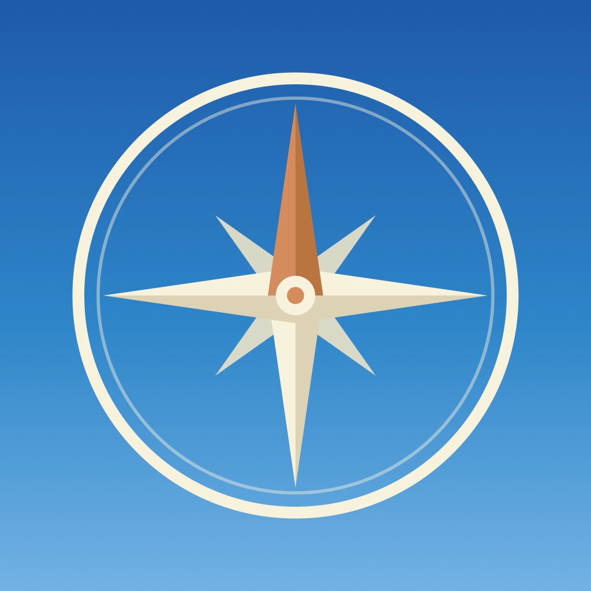

Roambase
Your travel companion
Plan trips, map your journey, and keep everything for the road in
one place — offline and entirely on your device. No account, no cloud.
- 🧭 Trips & stops on a colour-coded journey map — each leg
shows how you travelled (✈️ 🚆 🚗 🚌 ⛴ 🚶)
- 🗺 Day-by-day itinerary with distances, a live trip countdown
("in 12 days" / "Day 3 of 10"), a weather forecast for your
upcoming stops, and a packing checklist
- 🎫 Bookings — add by hand, paste a confirmation, or read a
screenshot, and drop it on your calendar
- 💰 Budget & full trip cost — spend across stops, bookings
and expenses, with a cost-per-day
- 🛰 Live movement tracker — flight, drive, bike, walk, hike,
run or boat: your speed, altitude and position on a map (works in airplane
mode); save the leg to your trip
- 🎁 Travel wallet — rewards programs, points, your
TSA PreCheck / Global Entry / passport numbers, and a live TSA wait-times
lookup, ready for the airport
Part of the GetLostAdv family,
alongside Skybase. Now in beta on
TestFlight.
Privacy Policy
© 2026 GetLostAdv